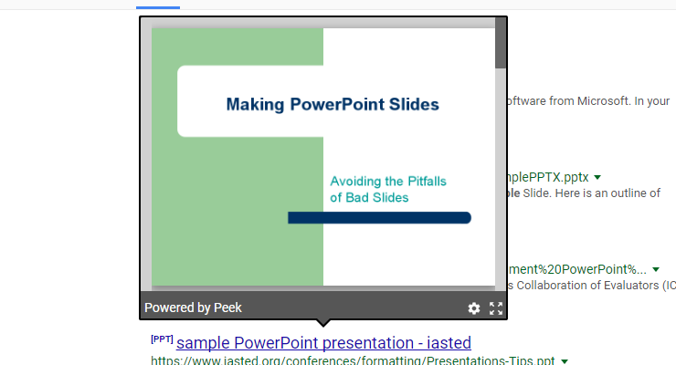
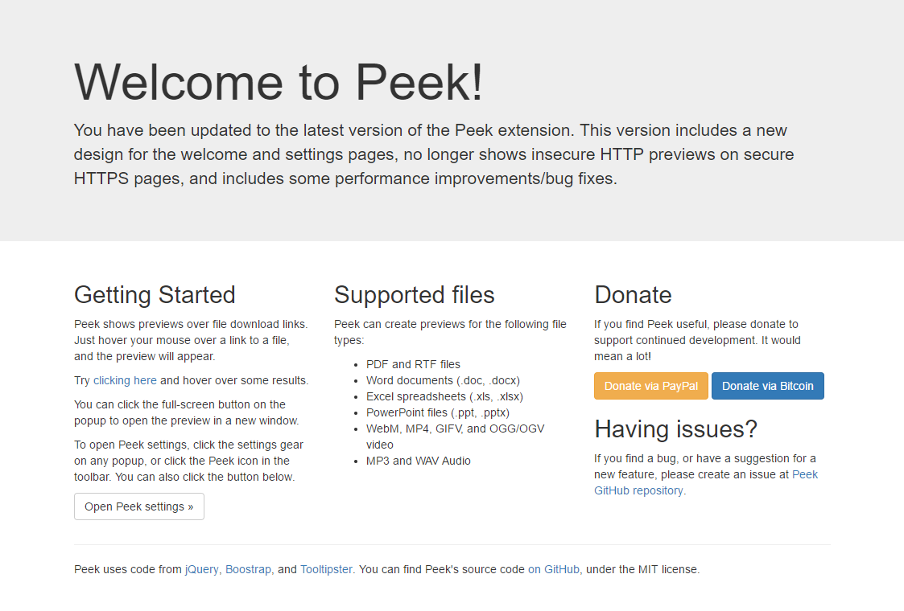

It’s been a while since I updated my Peek browser extension - eight months, in fact. Over the past two weeks, I’ve been working on a new update, and it has just been submitted to the Chrome Web Store and Opera add-ons site.
Most of the improvements in Peek 2.2 are under the hood. The extension heavily relies on the jQuery and TooltipsterJavaScript libraries, both of which have been updated to the latest versions. The design for the previews has been slightly tweaked, as seen below.

The settings and welcome pages have a brand-new design, using the Bootstrap framework. They look much better than the previous pages, but work exactly the same.

Some functionality has been removed in Peek 2.2. Previews for HTTP links are now disabled on HTTPS sites, for security purposes. In addition, support for Flash video file previews has been removed, due to F4Player no longer working. Chrome now blocks Flash embeds by default anyways.
Peek 2.2 is rolling out now on the Chrome Web Store, and is in the review process for Opera. The source code is available on GitHub.
Download Peek for Chrome
Download Peek for Opera